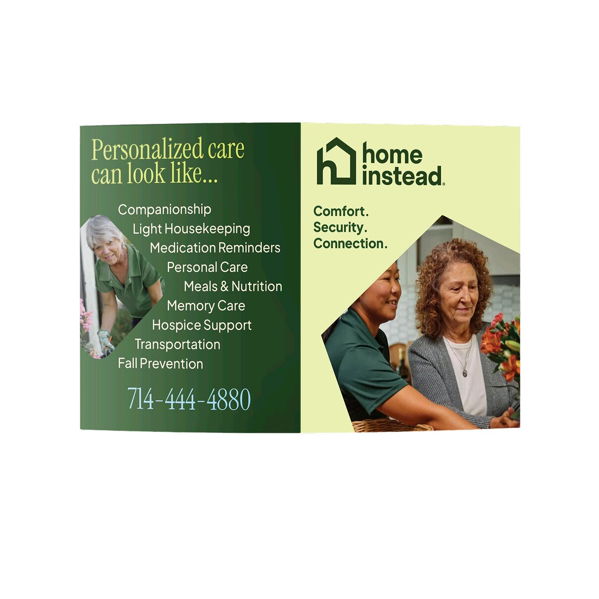

Overview
As a design intern at Home Instead In-Home Senior Care, I helped a franchise location through their rebranding process by redesigning their marketing materials from the ground up. Deliverables included a full client care packet, individual service flyers, and a client care folder — all updated to align with the company's new brand guidelines. These materials are now actively used by the company with current and prospective clients.
What Needed Changes
The existing marketing materials were built around the previous brand guidelines and no longer reflected the direction the company was moving in. Supervisors felt the materials looked dated and cluttered, particularly the client care packet, which was difficult to navigate. The rebrand aimed for a cleaner, warmer aesthetic — one that communicated friendliness, safety, and professionalism rather than the busier, more corporate feel of the old materials.


My Role
I was the sole design intern at this location, which meant I owned all of the design work from brief to final deliverable. I worked directly under supervisor direction, received feedback at each stage, and iterated until the work met their standards. It was a real lesson in balancing creative execution with client-specific constraints and expectations.
The Process
The workflow followed a clear cycle: I started each deliverable by meeting with supervisors to align on what was needed and how it should feel. From there I took detailed notes and developed initial concepts in Illustrator, Photoshop, and Canva, always working within the new brand guidelines. I presented drafts for review, incorporated feedback, and revised until the piece was approved. This process repeated across every deliverable in the packet.
Finished Work
Print Materials


Client Care Folder

Outcome
All completed materials are in active use by the franchise location, given to new clients as part of their onboarding experience and used as the company's primary marketing collateral. Seeing the work move from draft to something that represents the company in the real world was one of the most rewarding parts of the internship.
Reflection
This internship taught me what it actually means to design within constraints. Working from a set of brand guidelines someone else created, taking direction from supervisors, and producing work that has to function for a real audience across different contexts. It pushed me to separate my personal taste from what the work actually needed to be. I also learned how to receive and apply constructive feedback efficiently, which is a skill I'll carry into every project going forward.
Other Works